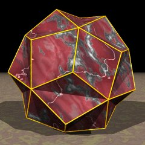

small triambic icosahedron

name
small triambic icosahedron,
(VRML)
dual
small ditrigonal icosidodecahedron
,
(VRML)
symbol
3|5/2 3
faces
20
vertices
32
edges
60
self intersected faces
0
nonconvex faces
0
vertices per face
6
number of such faces
20